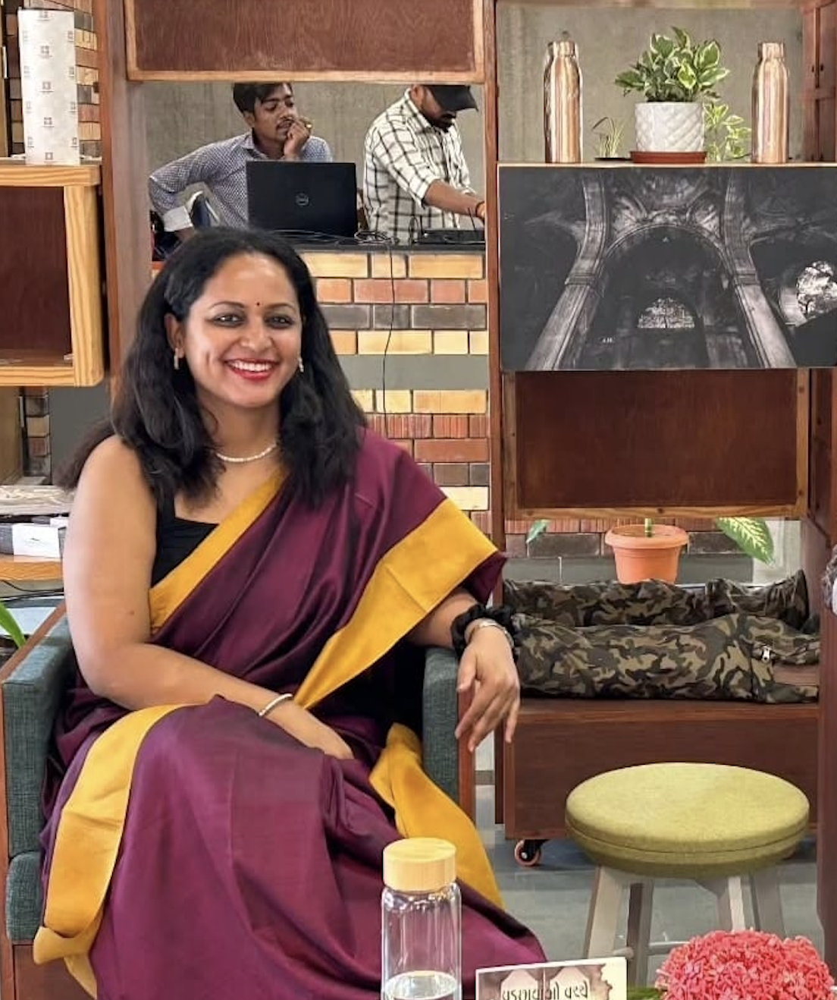

Home
Publications
Artworks
Editorial Services
Workshops
Testimonials
Contact
This website is currently a work in progress. Thank you for your patience.
+
Books
+
Pamuk's Istanbul
+
Purchase
Amazon India
Routledge
+
Reviews and Book Events
Review on Muse
Nesir Review
CHR Flagship
JGU Research
KU Event
Ahmedabad Writing Programme
+
Singapore At Home
+
Purchase
Amazon US
Kindle India
+
Reviews and Book Events
StoryMap Event
YouTube Video – Kitaab
Kitaab at SWF 2021
LinkedIn Post
New Indian Express Review
Vicky Chong Blog
Gargi Mehra Blog
Facebook Video
Kitaab Literary News
+
Papers
2024. Shifting the Focus
2022. Geography and Collective Memories
2021. Resting in the Met
2021. Gender and Domestic Space
2021. Documenting Visibility
2021. Decolonizing the Museum Space
2013. Magical Objects: Pamuk’s Museum of Innocence
+
Articles
Passing the Pandemic with Pamuk
The Green on Race Course Road
Reading Enid Blyton During the Lockdown
Three Essentials to Unravel Poetry Translation
Fresh Chilean Writing
Leela Samson
Museum of Innocence
Documenting Visibility – Transit Asia
+
Interviews and Reviews
The Sublime in the Subliminal
Affinities and Tensions
Diaspora Narratives
A Delicacy of Feeling
Eve and the Lost Ghost Family
Interview: Shanghvi
+
Short Stories
Ultimate Rendezvous in Bed
Red and Gold
Walking, Talking
+
Poetry
Malacca Night Market
Peace
+
Fellowships
Jalan Besar Writing Fellow
Koç University Visiting Scholar
South Asia Speaks Fellowship
CHCI-Mellon GHI on Migration
CHCI-GHI Chile
GA:MA Lab Writing Retreat
+
Media Coverage and Podcasts
City Scripts IIHS
MediaBrief: Alumni Meet
Spotify: Stepwell Radio
Apple Podcasts: Teevr Anubhuti
The Hindu – International Translation Day
YouTube: Event Panel
New Books Network
Baladramadurai Learning
Kitaab: Indian Author
Academia.edu – COVID Poems
Facebook: Video Reading
Embassy of Chile Event
Kitaab – Fiction Editor
Srutis Blog Interview
